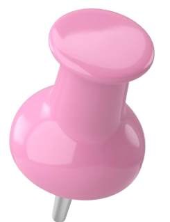
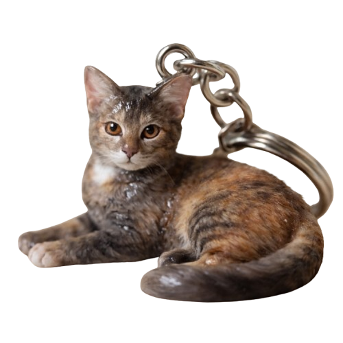

Bobo She/her 𓂃⋆.˚
Birthday: 13 September 2025 (estimated)
Age: Around 2 years
About her:
Loves cuddles, cozy naps, quietly watching the world from the window, and trying new treats. calm, soft spoken, emotional & incredibly sensitive. Her tiny, sweet voice, beautiful eyes, and unbelievably soft fur make her impossible not to fall in love with.
My POV:
Unlike my other babies, Bobo came into my life when she was already in her teenage months. I never got to see her as a tiny kitten, but that never mattered to me. From the moment she walked into my life, she became my baby, and she'll always be my baby.
Bobo is stronger than she looks. She has fought through serious illness twice and recovered both times. She also went through a premature delivery. Sadly, her tiny kittens never got the chance to see the world, but she stayed strong through it all. Seeing everything she has overcome only makes me admire her even more.
She's so cutie putie that one nickname could never be enough. I call her Boboshii, Bobojani, Bobshy, My Baby, My shylaa, Princess, Cutie, BBG lol n moreee other names that somehow appear the moment I see her adorable little face heheh.
I hope we get to spend many, many more years together, making memories, taking naps, sharing cuddles, and annoying each other forever. I love you endlessly, my precious little girl.